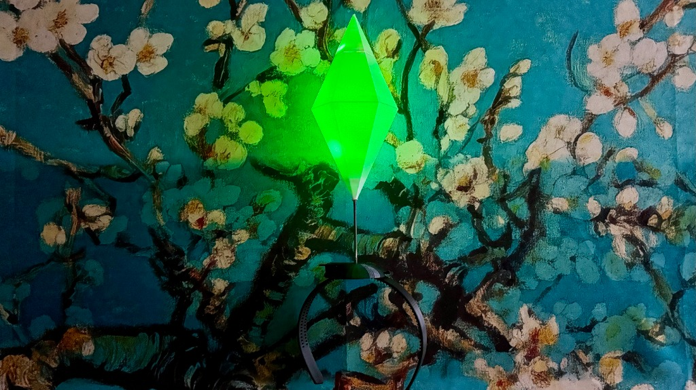
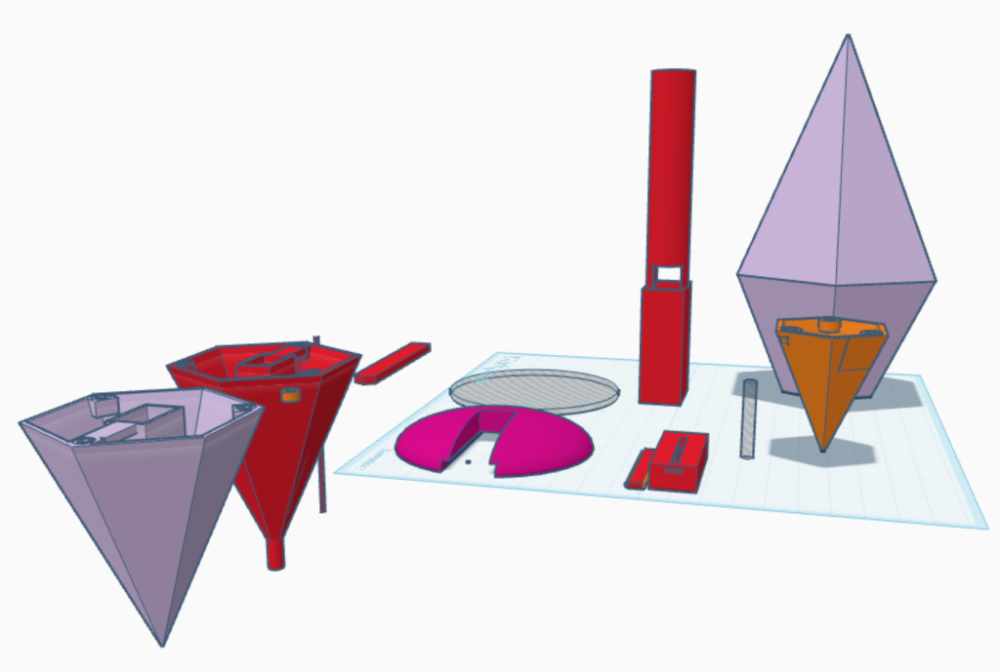
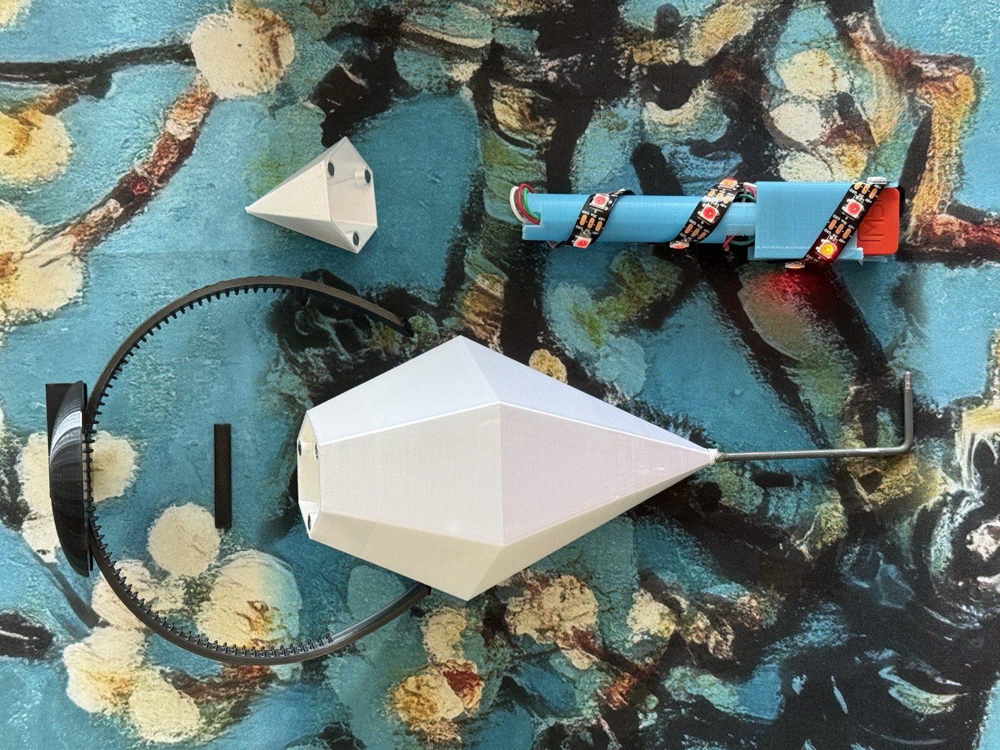
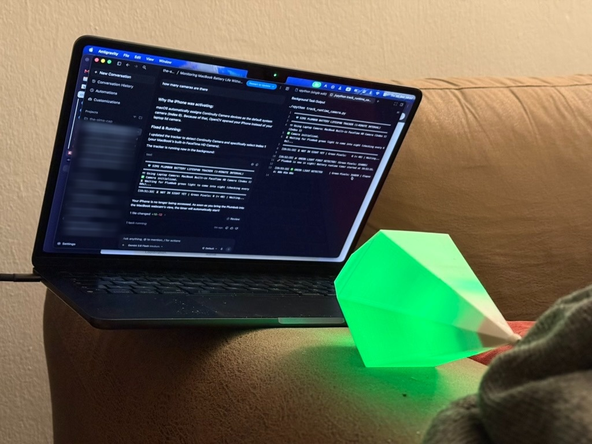

Somewhere in the middle of my hundredth (or maybe thousandth 🤔) session working with AI agents this year, it hit me: agentic workflows feel just like playing The Sims.
I’m a nostalgist gamer who prefers playing old games, so forgive my ignorance about the recent advancements in the series. I’m talking about The Sims 1 and The Sims 2.
Think about it:
- The Pie Menu: You’re cruising along while your agent works in the background, and suddenly it pauses to pop up a multiple-choice question card. Picking between options to steer its next move feels identical to clicking a refrigerator in The Sims 2 and choosing between "Have a Snack...", "Have Breakfast...", "Serve Breakfast...", or "Juggle Bottles".
- Action-Queue Overwhelm: Remember trying to manage a six-Sim household when the baby is crying, the toilet is clogged, and the action queue in the top-left corner is overflowing? That is the exact same brain-melt I get when I have four parallel agents running and I have to review all their outputs, tend to their needs, and answer their questions at once.
- Buy Mode: You’re in Buy Mode picking out a new refrigerator across different price ranges and features. Fun fact from the Sims Wiki: all refrigerators in The Sims 2 actually have the same base hunger value, but more expensive models hold a lot more food, and stocking them with fresh produce gives your cooked meals a higher hunger boost. Bigger fridge, bigger context window; better ingredients, better context quality. Doesn't choosing a fridge sound just like picking the LLM underneath your agent harness (or am I overthinking it now)?
- Free Will ON: Letting an agent run autonomously in a sandbox carries the exact same chaotic tension as leaving "Free Will" turned on in The Sims and walking away from your desk, silently praying nobody sets the kitchen stove on fire.
Once that parallel clicked in my head, my Halloween costume was locked in. I was going to become a Sim, complete with that glowing, color-changing green diamond floating over my head. I would speak Simlish, perhaps sing some Simlish songs, and get bonus points if I could bring the pie menu into real life.
Step zero of the project was Googling "the green diamond thing above a Sim’s head" and learning for the first time that it actually has an official name: the Plumbob.
To set the mood while building it, I threw on the legendary The Sims 1 soundtrack on Spotify. Those acoustic piano and smooth jazz tracks took me right back in time (side note: this album is still incredible background music for cooking or at work, in my opinion). Along the way, that nostalgia trip also sent me down a rabbit hole where I discovered that the Black Eyed Peas actually recorded Simlish versions of their songs, like "Let's Get It Started" (retitled "Ga Ra Ta Da") and "Shut Up" ("Friddy Dope"), for the 2004 spin-off The Urbz: Sims in the City. I had no idea that was a thing!
Here is how I brought the Plumbob into the real world with my AI agents.
Act I: Real-Life "Build Mode"
With the Build Mode piano music looping in the background, I needed a physical diamond shell that could diffuse LED light cleanly and survive a night out on a headband.
I bootstrapped the geometry from The Sims Plumbob model on Printables, which originally splits into two equal halves held together by neodymium magnets. However, I had a few extra constraints: splitting the diamond into two equal halves in the middle was infeasible because of the cabling inside and basic physics, and the magnets I had on hand were smaller than the ones the original model was designed for. Instead, I needed the main body to stay mostly in one piece on a metal rod, with only a small magnetic pyramid cap at the very top so the electronics sled could slide right in.
Naturally, since I was already using AI agents for the project, I thought: why not let the agents modify the 3D geometry?
The agents really did their best to show me what they were doing, taking screenshots and rendering views from every angle, but they kept missing what I actually wanted. To be fair, that was probably a misunderstanding on my end because I didn't know how to describe the exact 3D changes I had in mind!
So I called off the agents and went back to doing it by hand in Tinkercad, which is my favorite tool for modifying geometric models: it runs right in the browser, it's free, and it's super easy to use. As you can see below, my Tinkercad workflow is delightfully messy. Instead of proper version control, I just duplicate parts and leave every previous iteration parked in the void around the same workplane: the original split halves off to the left, the pink stabilizer base in the middle, the red internal core for the electronics, and the final asymmetrically split diamond on the right.

The collaboration didn't stop at the screen, either. When I needed a rigid metal stem and a way to keep a top-heavy diamond from flopping around like a pendulum on my head, the agent walked me through the lever-arm physics, suggested using a wide curved stabilizer plate on a headband to distribute the torque, and even mapped out which hardware store aisles and craft shops in Munich to check (down to the exact German terms to ask the staff and how to cut metal rods at home). After all that scouting, I ended up spotting a decorative metal frame at a local crafts shop, buying it, and cutting it down into the L-shaped stem you see below. Once all the 3D prints finished, I glued the stabilizer base onto the 3D-printed headband so the cut metal stem could lock right in.

Act II: Shine Bright Like a Plumbob
Inside the diamond sits an M5StickC Plus (a tiny microcontroller with a built-in battery, speaker, and motion sensor) wired to a 15-LED strip wrapped around the 3D-printed core. With the agents handling the firmware, I had all the classic Sims 2 mood states (Green for Good, Platinum for Best, Green-Yellow, Orange, and Red for Horrible) along with two lighting modes: a smooth breathing glow that drifts up and down the LED strip, and a sparkle mode that makes the diamond twinkle like a gemstone.
The Plot Twist: Dying Energy Bars
Originally, my plan was to control the Plumbob’s mood colors wirelessly over Bluetooth Low Energy (BLE) or Wi-Fi. I even had the agent build a Mac BLE controller and an automated power benchmark suite to test it out.
Then reality hit: the M5StickC Plus only has a tiny 120 mAh internal battery. With the wireless radios active alongside 15 LEDs, my Plumbob’s "Energy" Need bar was plummeting into the red in well under an hour.
To survive Halloween night, I had to completely kill the Wi-Fi and Bluetooth radios.
But that created a new problem: if there’s no wireless control, how do you change your mood color in the middle of a conversation without awkwardly reaching up to fumble for a tiny button above your head?
The Solution: Simlish Body Language
The M5StickC Plus has a built-in accelerometer and gyroscope, which meant I could replace wireless commands with physical head gestures.
I actually worked with accelerometers over 10 years ago, when I built my own step counter from scratch long before smartwatches or AI agents were a thing. Because of that, my first reaction was pure dread: I was afraid I’d have to spend days doing heavy linear algebra, axis projections, and signal-filtering optimizations just to tell a head shake apart from normal walking. Instead, I just described the gestures I wanted to the agent, and it handled all the 3D vector math and tuning:
- Shake your head "No" (
Left → Right → Left): Detects an intentional 3-turn head shake and cycles the Plumbob to the next mood color. If someone asks you an annoying question and you shake your head, your Plumbob literally turns Red. - Double-nod "Yes" (
Down → Up → Down → Up): Toggles between the smooth breathing glow and sparkle mode, complete with a tiny retro chime.
Act III: Min-Maxing the Energy Bar
While the agents struggled to read my mind on 3D CAD, squeezing every last drop of life out of the battery was where they really shined. Since the microcontroller was hidden inside the diamond anyway, the agent started turning off everything the hardware didn't strictly need:
- Shutting Down Hidden Hardware: It completely powered off the built-in screen and kept the internal speaker rail turned off by default, waking it up for just a fraction of a second whenever the Plumbob needed to play a sound effect.
- Napping Between Frames: Instead of running the processor at full speed, the firmware slows the clock down and puts the chip into a light sleep in the tiny gaps between LED animation frames.
- Waking the Gyroscope on Demand: Keeping the gyroscope running all night to watch for head shakes still drained too much battery. So the firmware puts the gyroscope to sleep and leaves only the low-power accelerometer awake. The moment the accelerometer feels your head start to move, it wakes the gyroscope up just long enough to check if you’re shaking or nodding.
Wait, How Do You Benchmark Battery Life Without Wires or Bluetooth?
Once I disabled Serial, Wi-Fi, and BLE in the production build so they wouldn't skew the power draw, there was no way for the Plumbob to report how long its battery lasted.
So the agent whipped up a zero-wire OpenCV optical battery tracker that used my laptop's camera to check once a minute if the green Plumbob was still glowing on the couch.

Even that had a hilarious macOS plot twist. As you can see on the screen above, OpenCV initially hijacked my iPhone via macOS Continuity Camera instead of the laptop webcam, wondering why it saw zero green pixels, until the agent updated the script to automatically skip the iPhone and lock onto the MacBook lid camera.
I’m not going to lie: I also personally stared at the green Plumbob for 4 hours (twice!) until I fell asleep, and officially decided it has at least 4 hours of battery life. Considering it used to die in less than 2 hours before all the heavy power optimizations, that was already way "better"y 🔋🔋
Stepping Into the Simulation
Taking the Plumbob out on Halloween night was surreal. Just as my sleepy staring tests predicted, the tiny battery lasted a solid 4-5 hours, which was more than enough for the night. In a dark, packed crowd, having a bright green beacon floating above your head makes you impossible to lose (you basically become a human waypoint marker for your friends), and several people walked right up to greet me with "Sul Sul!", which felt amazing. Being able to shake my head to turn the diamond Red or double-nod into sparkle mode mid-conversation was the cherry on top.
More than anything, building this reminded me just how joyful it is to collaborate with these agents on a weird weekend idea. Even when you have to step in and do the 3D modeling by hand, having a tireless partner to bounce ideas off of while you vibe to The Sims 1 soundtrack is pure fun.
And the funniest part? I started this whole project because managing AI agents made me feel like I was playing The Sims. By the end of Halloween night, the agents had turned me into the Sim.
I’d love to hear what you think! Have you tried building physical things with AI agents, or do your own workflows ever remind you of a game you used to play? Feel free to reach out and share your thoughts, ideas, or feedback.
Sul Sul! 💎